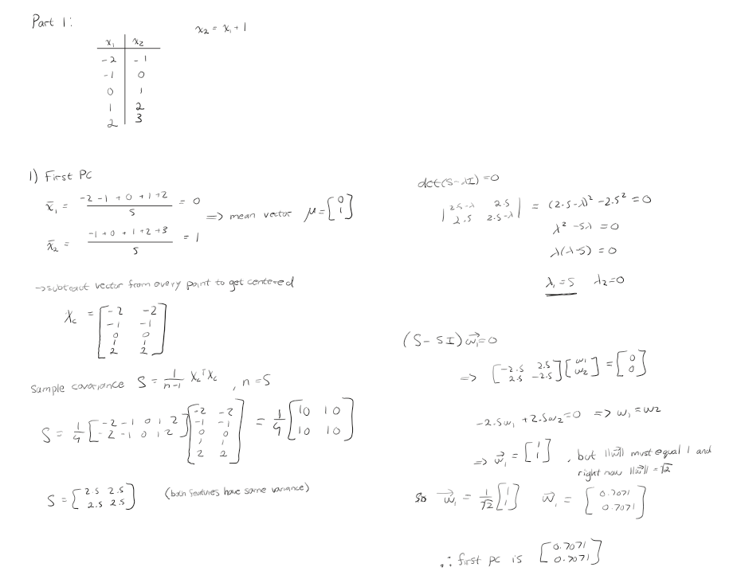
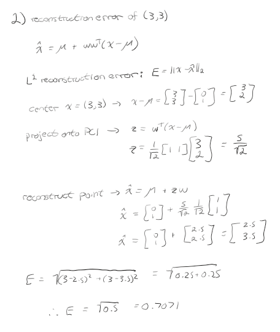
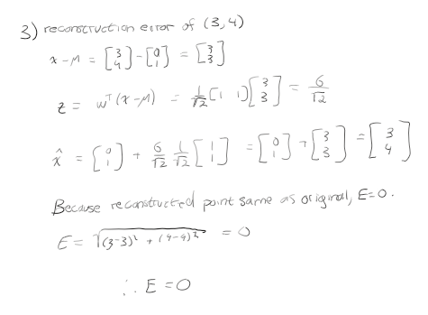
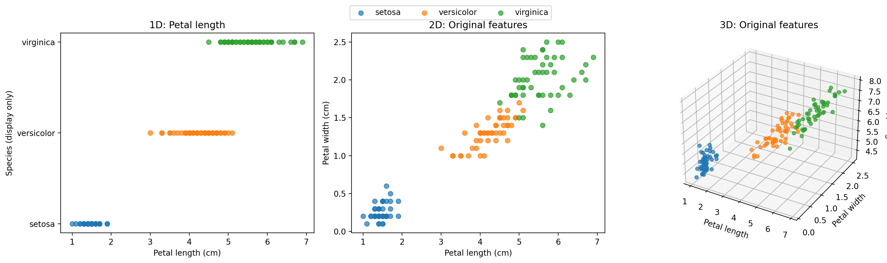
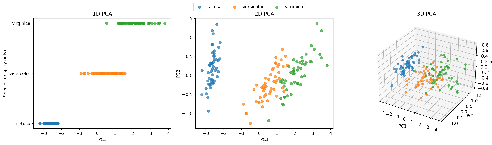
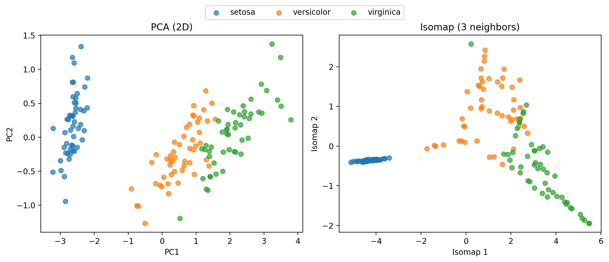

Principal Component Analysis
PCA by hand, visualizing the Iris dataset, measuring variance retained by dimensionality reduction, and comparing linear PCA with nonlinear ISOMAP.
Part 1 — PCA by Hand
The five data points are (−2, −1), (−1, 0), (0, 1), (1, 2), and (2, 3). They all lie on the line x₂ = x₁ + 1, so one principal component can describe the complete dataset without loss. The following calculations are shown in the attached handwritten work.
1. First principal component
The feature means are 0 and 1. Subtracting the mean vector from each observation produces centered pairs (−2, −2), (−1, −1), (0, 0), (1, 1), and (2, 2). From this centered matrix, the sample covariance is:
S = (1 / 4) Xᶜᵀ Xᶜ = [[2.5, 2.5], [2.5, 2.5]]
det(S − λI) = λ(λ − 5) = 0
The eigenvalues are 5 and 0. The eigenvector associated with the larger eigenvalue is [1, 1]ᵀ, which must be normalized to unit length.

2. Reconstruction error of (3, 3)
With only PC1 retained, a point is projected onto the principal axis and reconstructed as x̂ = μ + wwᵀ(x − μ). The L2 error is the Euclidean distance from x to x̂.
z = wᵀ(x − μ) = 5 / √2
x̂ = μ + zw = [2.5, 3.5]ᵀ

3. Reconstruction error of (3, 4)
This point is already on the data line, so projection and reconstruction leave it unchanged.
z = wᵀ(x − μ) = 6 / √2
x̂ = μ + zw = [3, 4]ᵀ

Part 2 — Data Visualization
The Iris dataset was retrieved directly from the UCI Machine Learning Repository (dataset ID 53) using ucimlrepo. It contains 150 observations across three species (Setosa, Versicolor, and Virginica). Each observation includes sepal length, sepal width, petal length, and petal width, all measured in centimeters. To marginalize the data as requested, I directly selected one, two, and three original feature dimensions without transforming them.
1D: petal length
2D: petal length and petal width
3D: petal length, petal width, and sepal length

In the one-dimensional petal-length projection, Setosa is clearly separated from the other species, with petal lengths approximately between 1 and 2 cm. Versicolor and Virginica occupy higher, partially overlapping ranges. The two-dimensional petal-length/petal-width plot reveals three recognizable clusters: Setosa is completely separated, while Versicolor and Virginica overlap in a small region. Adding sepal length as a third feature reveals more of the distribution but does not fully eliminate the overlap. Among these selections, petal length and petal width provide the clearest, simplest class separation.
Part 3 — Principal Component Analysis
Unlike Part 2, PCA constructs new axes as linear combinations of all four original measurements. I fit scikit-learn's PCA(n_components=4) on the UCI Iris features; the estimator centers each feature, and I did not standardize feature variances. The transformed coordinates were plotted using the leading one, two, and three principal components.
Z = Xᶜ W
W = [PC1, PC2, PC3, PC4]

Principal component vectors
Each row is one unit PCA direction, with columns ordered as sepal length, sepal width, petal length, and petal width. Eigenvector sign is arbitrary.
| Axis | Sepal length | Sepal width | Petal length | Petal width |
|---|---|---|---|---|
| PC1 | 0.3616 | −0.0823 | 0.8566 | 0.3588 |
| PC2 | 0.6565 | 0.7297 | −0.1758 | −0.0747 |
| PC3 | −0.5810 | 0.5964 | 0.0725 | 0.5491 |
| PC4 | 0.3173 | −0.3241 | −0.4797 | 0.7511 |
Comment. PC1 is most strongly influenced by petal length (coefficient 0.8566), while PC2 is primarily influenced by sepal length and sepal width (0.6565 and 0.7297). The one-dimensional PC1 projection clearly separates Setosa from the other species, but Versicolor and Virginica overlap. The PC1–PC2 projection reveals three recognizable groups, with overlap remaining between the latter two. PC3 adds some variation but does not completely separate those classes. The first two PCs already retain 97.76% of the total variance, so the third contributes relatively little additional variation.
Part 4 — Data Compression
For centered data, the squared Frobenius norm equals the total sum of squared deviations. It is proportional to the sum of covariance eigenvalues, so retained variance after projection onto the first k PCs is the sum of their eigenvalues divided by the total.
Explained variance (k PCs) = (λ₁ + ··· + λₖ) / Σᵢ λᵢ
Relative squared reconstruction error = 1 − explained variance
| Component | Individual variance | Cumulative variance |
|---|---|---|
| PC1 | 92.4616% | 92.4616% |
| PC2 | 5.3016% | 97.7632% |
| PC3 | 1.7185% | 99.4817% |
| PC4 | 0.5183% | 100.0000% |
1. Variance explained by two dimensions
Two PCA dimensions retain nearly all of the original variance. Only about 2.24% of the total centered squared variation is lost.
2. Number of PCs needed for 50% variance
PCA is a very effective compression method for this dataset: the four original features can be reduced to two with relatively little loss of variation. This statement concerns variance and squared reconstruction error, not necessarily how much information is retained for a classification task.
Part 5 — Nonlinear Components (ISOMAP)
ISOMAP was applied to the Iris dataset using 3 nearest neighbors to produce a two-dimensional representation. Unlike PCA, which finds linear directions of maximum variance, ISOMAP estimates geodesic distances through a nearest-neighbor graph to capture nonlinear relationships in the data.
Method
ISOMAP: construct a 3-nearest-neighbor graph, estimate shortest-path distances, and apply multidimensional scaling (MDS).

Classification comparison
To evaluate the ability of each representation to classify the Iris species, a 5-nearest-neighbors (KNN) classifier was evaluated using stratified 5-fold cross-validation. PCA and ISOMAP were fitted separately within each training fold to prevent data leakage. Both methods reduced the original four features to two dimensions before classification.
| Metric | PCA (2D) | ISOMAP (2D) |
|---|---|---|
| Mean classification accuracy | 96.67% | 95.33% |
| Accuracy standard deviation | 2.11% | 4.00% |
| Silhouette score | 0.5344 | 0.5598 |
| Variance retained (2 PCs) | 97.76% | Not directly comparable |
Classification results. PCA achieved a mean classification accuracy of 96.67% (±2.11% standard deviation), compared with 95.33% (±4.00%) for ISOMAP. Although ISOMAP had a slightly higher silhouette score (0.5598 versus 0.5344), PCA achieved marginally better and more consistent classification performance. This demonstrates that better cluster separation does not necessarily translate to higher classification accuracy.
Data compression and reconstruction
PCA retains 97.76% of the original variance using only two principal components and allows straightforward linear reconstruction of the original measurements. ISOMAP instead attempts to preserve nonlinear neighborhood relationships and does not provide a directly comparable explained-variance measure or a straightforward exact inverse transformation.
Conclusion
Overall, PCA is preferable for the Iris dataset under the evaluated criteria. It preserves nearly all of the original variance, provides a simpler reconstruction method, and achieves slightly higher classification accuracy than ISOMAP. While ISOMAP produces a nonlinear representation with a marginally higher silhouette score, this does not translate into improved classification performance. The accuracy difference is small, however, so these results do not establish that PCA will consistently outperform ISOMAP on other datasets.
Python Source
The script fetches UCI Iris dataset 53 using ucimlrepo, then produces original-feature plots, PCA vectors and variance ratios, the three-neighbor ISOMAP embedding, and silhouette scores. It uses NumPy, Matplotlib, and scikit-learn without extra helper functions.
Show core PCA, variance, and ISOMAP code
from ucimlrepo import fetch_ucirepo
from sklearn.decomposition import PCA
from sklearn.manifold import Isomap
from sklearn.metrics import silhouette_score
import numpy as np
iris = fetch_ucirepo(id=53)
X = iris.data.features.to_numpy(dtype=float)
y = iris.data.targets.iloc[:, 0].to_numpy()
pca = PCA(n_components=4)
X_pca = pca.fit_transform(X)
print(pca.components_)
print(pca.explained_variance_ratio_)
print('Variance retained with 2 PCs:', pca.explained_variance_ratio_[:2].sum())
print('PCs needed for 50%:', np.searchsorted(np.cumsum(pca.explained_variance_ratio_), 0.5) + 1)
isomap = Isomap(n_neighbors=3, n_components=2)
X_isomap = isomap.fit_transform(X)
print('PCA silhouette:', silhouette_score(X_pca[:, :2], y))
print('ISOMAP silhouette:', silhouette_score(X_isomap, y))